01
Active Compounds
Identify and characterize bioactive constituents
Platform / Piper longum
Exploring Bio-Responsive Potential
Through Piper longum
A&S is investigating Piper longum as a representative bio-responsive ingredient across interconnected research dimensions—from active compounds and biological interactions to functional potential and application.
Identify and characterize bioactive constituents
Examine how compounds engage biological interfaces
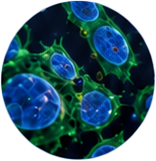
Study receptors, signaling, and cellular pathways
Map neural, metabolic, immune, and related responses
Evaluate measurable health-related potential
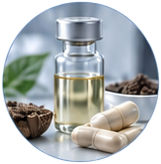
Translate evidence into relevant solutions
Ancient wisdom. Modern science.
A traditional botanical
for modern well-being
Piper longum, also known as Pippali, has been valued for centuries in traditional medicine systems, especially in Ayurveda, as a tonic herb with nourishing and immune-modulating properties.
Beyond its long history in traditional use, modern research has revealed the potential of Piper longum to support skin barrier protection, making it a promising ingredient for innovative applications in personal care.
Piper Longum Fruit /
Piper Longum Fruit Extract
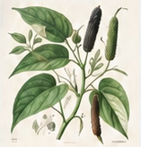
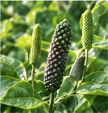
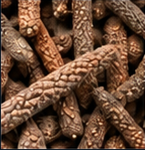
Native to the Indo-Malayan region, particularly northeastern India and the Himalayas, Piper longum has been widely used in traditional herbal medicine and Ayurvedic formulations for centuries.
A key herb in Ayurveda,
known as “Pippali”
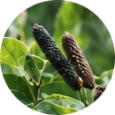
Including piperine,
piperlongumine and
volatile oils
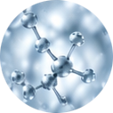
Digestive, respiratory,
antioxidant, anti-inflammatory
and more
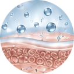
Recent studies suggest
beneficial effects on
skin protection
From nature’s heritage
to a brighter tomorrow.
Botanical
science
for a more
vibrant life.
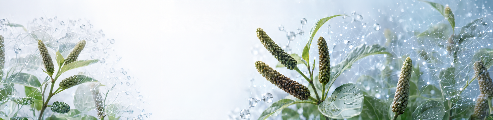
Piperine, piperlongumine &
volatile constituents
Piper longum is rich in bioactive compounds. Piperine is the most studied alkaloid, while piperlongumine is another significant alkaloid. Additional volatile oils and other phytochemicals contribute to its broader biological interest.
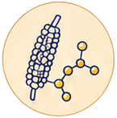
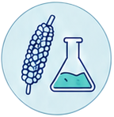
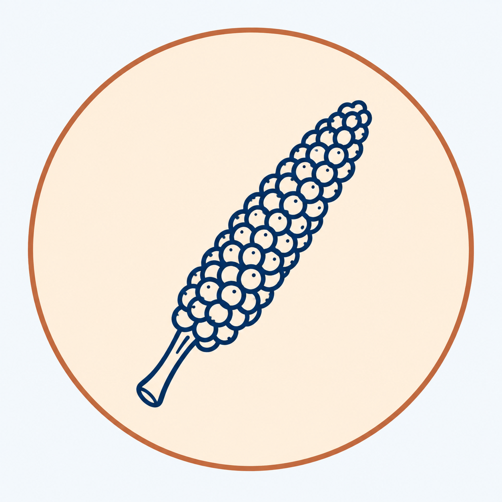
Linked to piperine
and sensory pathways.
Alkaloids associated with anti-inflammatory, antioxidant, and anti-tumor research.
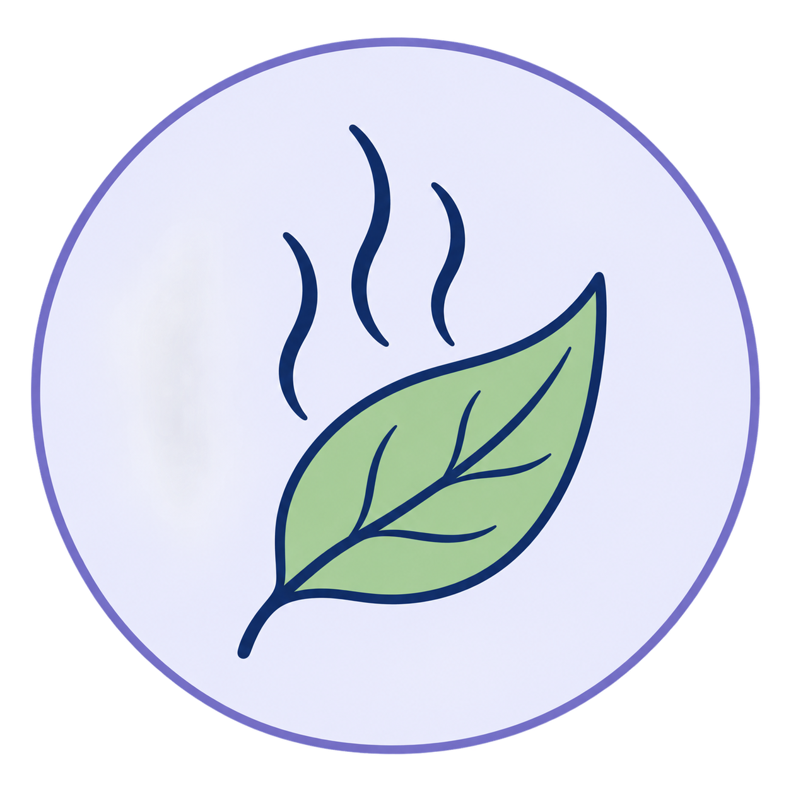
Volatile constituents contribute to aroma
and sensory experience.
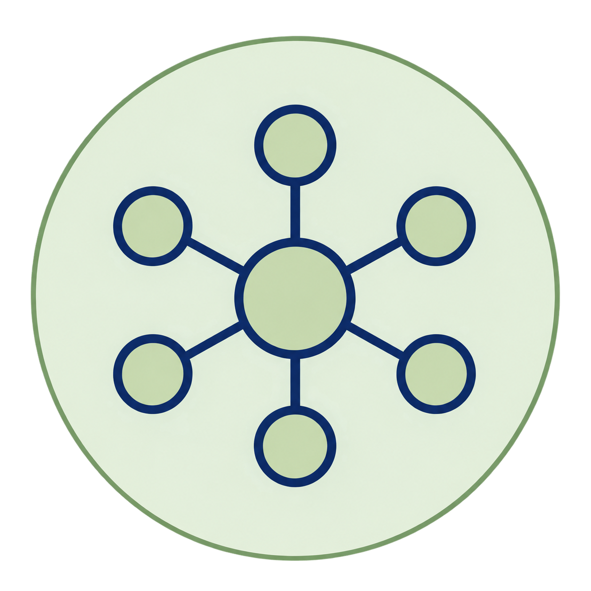
Multiple classes of compounds support broad biological
and research interest.
Oral–gastrointestinal
bio-responsive pathway
Piper longum has a long history of traditional use for digestion and appetite. Piperine, its best-studied alkaloid, contributes pungency and is especially notable for bioavailability-enhancing research.
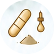
Capsule, liquid, powder,
or food exposure.
Ingredient release and movement through the gastrointestinal tract.
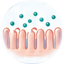
Local contact with gastrointestinal surfaces.
Interaction with intestinal permeability and transport mechanisms.
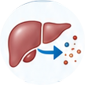
Intestinal absorption and presystemic metabolism.
Resulting exposure of piperine
or co-administered compounds.
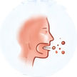
Occurs when Piper longum or piperine directly contacts oral sensory receptors.
Centuries of use in
traditional systems.
Extensive scientific
investigation.
Best-supported pathway
and outcomes.
An exploratory aroma–
olfactory research route
Piper longum contains volatile constituents such as caryophyllene and pinene. These molecules may be explored through inhalation exposure and olfactory or trigeminal interfaces, but specific receptor-level and human-response mechanisms require further validation.
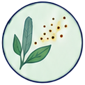
Aroma molecules are released
from Piper longum.
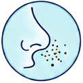
Molecules enter the nasal cavity
with the airflow.
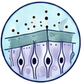
Molecules contact olfactory epithelium and trigeminal sensory endings, initiating sensory signals.
Signals are transmitted via neural pathways. Research explores how the brain may process these sensory inputs.
Possible associations with perception, aroma character, and sensory experience are being investigated.
Topical interaction &
skin barrier research
Recent research suggests that Piper longum may offer relevant cosmetic value through antioxidant protection, skin barrier support, and topical interaction with the skin surface. It is also of interest as a penetration-enhancing botanical.
Ingredient is applied to the skin surface.
Immediate interaction with the stratum corneum.
Interest in supporting delivery and surface-level activity.
Antioxidant, soothing, and skin-supportive relevance.
Potential cosmetic benefits for barrier, appearance, and comfort.
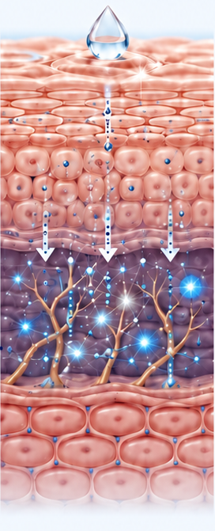
From traditional botanical
to bio-responsive
research model
Piper longum helps connect traditional botanical knowledge with modern bio-responsive research. It provides a useful model for linking phytochemistry, sensory science, topical research, and human-response thinking.
Centuries of use in Ayurveda as Pippali.
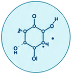
Piperine, piperlongumine, volatile oils, lignans, and amides.
Inhalation, oral–gastrointestinal, and topical research possibilities.
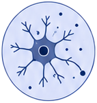
Supports more targeted study of biological interaction.
Bridges molecule-level science and human-centered application.
One botanical. Multiple interfaces. One research platform.